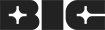
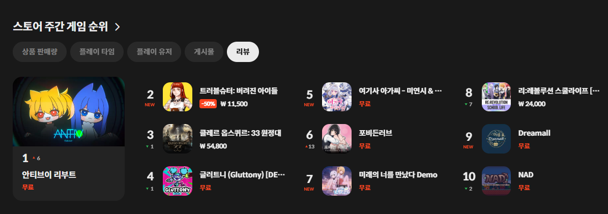

ANTI-V: REBOOT · GAME PM
게임이 좋아서,
직접 만들기 시작했습니다.
좋아하는 게임을 아이디어에 머물게 하지 않기 위해 Anti-V: Reboot를 만들었습니다. 퍼즐 액션의 기획 구조와 사업 방향을 총괄하고 개발 일정, 전시 준비와 외부 커뮤니케이션을 연결했습니다.
- ROLE
- PM / 사업 총괄
- TEAM
- 데프캣 스튜디오
- PLATFORM
- PC · STOVE
ROLEPM
기획·사업 총괄
RESULT1·2위
STOVE 주간 게임
EXHIBITION4회
국내외 게임 행사
전시·성과 상세 기록＋
EXHIBITED AT · 2024—2026
만든 게임을 들고
네 번의 현장으로 나갔습니다.
좋아해서 만든 게임이 실제 관객을 만나는 순간을 확인하고 싶었습니다. 국내외 게임 행사에서 플레이 빌드를 선보이고 반응과 피드백을 다음 개발에 반영했습니다.
-
대구콘텐츠페어2024 · Daegu
-

BIC Festival2025 · Busan -
G-STAR2025 · Busan
-
Taipei Game Show2026 · Taipei


STOVE WEEKLY GAME TOP 20
완성한 게임은 STOVE에서
주간 1·2위에 올랐습니다.